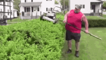

Landscaping
Landscaping is the art and practice of designing and modifying outdoor spaces to enhance their aesthetic appeal and functionality. This can involve the arrangement of plants, trees, pathways, water features, and structures. A landscaping class typically covers a range of topics to equip students with the knowledge and skills necessary for effective landscape design and maintenance. A landscaping class provides essential skills in both design and implementation, allowing participants to create beautiful, functional outdoor spaces while considering environmental impact and sustainability. It's an excellent course for anyone interested in pursuing a career in landscaping or simply wanting to enhance their own outdoor areas.
Concepts covered in the landscaping class:

- Introduction to Landscaping:
- Overview of landscape design principles and history
- Understanding the role of a landscape designer
- Site Analysis:
- Assessing site conditions (topography, soil, climate)
- Identifying existing vegetation and infrastructure
- Understanding drainage and environmental considerations
- Design Principles:
- Elements of design (line, form, color, texture)
- Basic design concepts (balance, unity, rhythm, proportion)
- Creating functional outdoor spaces (patios, gardens, pathways)
- Plant Selection:
- Identifying different types of plants (trees, shrubs, perennials, annuals)
- Understanding plant characteristics (growth habits, light requirements, hardiness zones)
- Selecting plants for specific landscapes and purposes (privacy, aesthetics, habitat)
- Hardscaping:
- Introduction to hardscape materials (stone, brick, concrete)
- Designing and installing patios, walkways, walls, and fences
- Integrating hardscaping with softscaping (plants)
- Irrigation and Water Management:
- Understanding water needs for plants
- Designing efficient irrigation systems (drip, sprinkler)
- Managing runoff and erosion control
- Landscape Maintenance:
- Seasonal maintenance tasks (pruning, mulching, fertilizing)
- Pest management and disease control
- Sustainable practices (organic gardening, native plants)
- Landscape Lighting:
- Principles of outdoor lighting design
- Types of lighting fixtures and their applications
- Enhancing safety and aesthetics with lighting
- Sustainable Landscaping:
- Introduction to eco-friendly landscaping techniques
- Designing for biodiversity and wildlife habitats
- Rain gardens and xeriscaping for water conservation
- Project Management:
- Planning and executing a landscape design project
- Budgeting and estimating costs
- Working with clients and understanding their needs
Practical Experience:
- Hands-on projects, such as creating design plans or installing landscapes.
- Field trips to local gardens or landscaping companies.
- Group critiques of design projects to foster feedback and improvement.